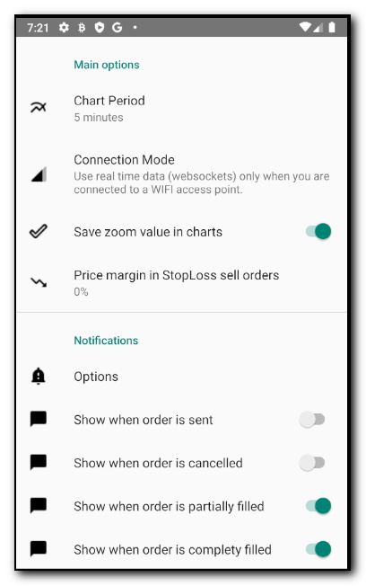

Crypto TAB - Trading and Pumps detector for Binance Exchange
Main Screen
Here you can add any coin in order to see its value in realtime!!!
- Swipe from the left of the screen to open the options menu.
- Drag and drop any coin to personalize your screen ( it will be saved ).
- Press over the "+" button to add new coins to the main screen.
- Pres over a coin to open the chart screen
Pumps Detection
When pump detection is enabled, Crypto TAB check all binance coin variations and send you a notification if match with your
filter configuration.
- You will receive a notification per each pump detected.
- You can press in the notification to open the chart screen in order to buy or sell.
- You can swipe the notification to delete.
Be careul with Pump detection. After a pump normally comes a dump so analize it before to buy!!!!.
In order to enable the pump detection you need:
- Go to settings menu and enable pump detections notifications and set your detection preferences. You can detect price
variations ( up and down ) and volume variations.
- Enable or disable the "pump detection switch" in the sidebar to start or stop the pumps notifications.
Charts Screen
This is the trading view, you have a lot of options on this screen....
- Long press in the Coin Name to add or delete this coin to the main screen coin list. ( vertical green line indicates that is in the list ).
- Swipe left or right the half bottom view to switch between "order book" , "trades" , "open order" or "historic orders" view.
- Press in a trade to open the buy/sell screen. Price of the item pressed will be selected.
- Long press in the right chart view axis to open the buy/sell screen.
- You have access to all important information in only one view… You can see the chart, last trades, order book , buy vs sell orders, etc.
Configure API Keys
Here you need enter the Binance Keys if you want buy or sell from Crypto TAB.
- You can type public a private data directly on the text area.
- You can scan using your mobile camera pressing "Scan Key" buttons and selecting a QR Barcode with your api information.
Before to Save, you need press the Check button to confirm that both keys are ok. You will see a message with your account data if everything is ok.
Wallet Information
If you have already entry you API information you will see here you wallet data.
- Total Funds in BTC.
- Total Funds in USDT.
- Table with your Altcoin details.
Settings
Here you can define a lot of parameters of the application :
- Chart Period. Period of time of each candle in the chart view.
- Connection Mode. Real time mode uses huges of data because receives realtime data from Binance, use it only if you have a Wifi connection.
=> Selecting Default mode uses realtime data when detect a Wifi connection and switch automatically to “no realtime data” when 3G/4G network is detected.
- Save zoom value: It will remember your last zoom value used when you restart the program.
- Notifications. Define what notifications you want to receive.
- Pump Detection: Define the filter an notifications that you want to receive.
